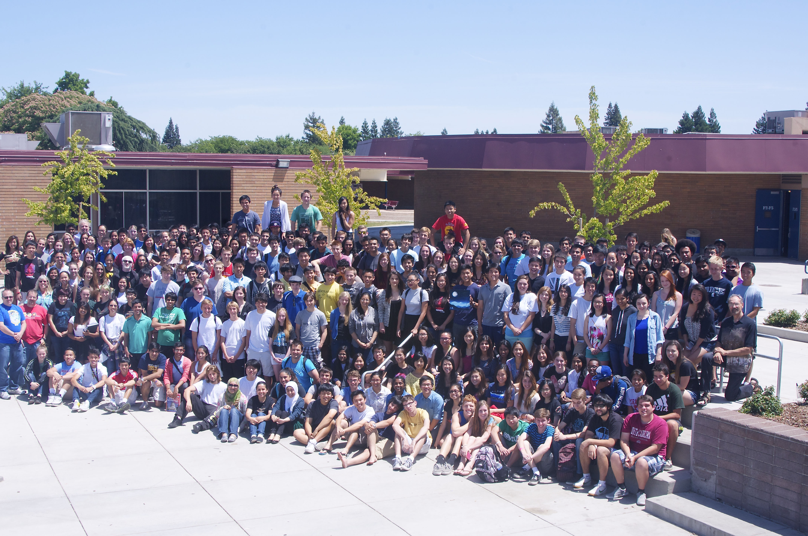

ABOUT US
Arcade Creek Project: Team of 2013-2014

How it Began
Shortly after the arrival of the International Baccalaureate Program to our campus in 1989, the Arcade Creek Project became an integral component of IB science at Mira Loma. In this program, science courses are offered in IB Biology, IB Physics, or IB Environmental Systems. Students at Mira Loma working on the Arcade Creek Project are able to actively apply the scientific knowledge they acquire in the classroom to their responsibilities within the surrounding community.
Areas of Study
The Arcade Creek Project consists of three main focuses: collection of scientific data to determine the overall health of the creek, spreading the word to the community through educational outreach, and restoring and preserving the health of the creek through unified student efforts.
What We Do
The goal of the Arcade Creek Project is to break down a complex ecosystem into analyzable data for assessment. This process then utilizes all eleven studies to holistically determine the health of the watershed. As Arcade Creek is a vital life support for many species, the destruction of this riparian community could cause irreversible damage to the natural life around the area. Our Outreach group serves to enlighten our community to these effects and educate them about the importance of the environment. Additionally, all students participate in restoration efforts to remove invasive species and maintain the creek’s natural balance.
How the Project Stays Alive
At the end of every school year, the seniors of Mira Loma High School graduate, leaving the juniors with the task of continuing the Arcade Creek Project. At the start of the next school year, the new seniors take on the roles of Managers and Leaders, who mentor the incoming juniors taking IB Science courses. The new members are given the chance to pick the study they feel most suited for, thus ensuring continuity from year to year.
Acknowledgements
The Arcade Creek Project has received many grants, awards, and acknowledgements over the years including The Sacramento Urban Creek Council Creek Steward Award and the 2004 Government's Environmental and Economic Leadership Award. Many generous groups have given our project grants and awards to fulfill our goals, including the Sacramento River Cats, Wells Fargo Bank, and the Sacramento Region Community Foundation. Furthermore, we have received significant media attention from local newspapers, radio and television. To view online articles about the Arcade Creek Project, visit the Recognition page.
What is the International Baccalaureate Program?
The International Baccalaureate (IB) offers a high quality program of international education to a worldwide community of schools. For over forty years, the IB Diploma program has prepared students to ask challenging questions, develop a strong sense of identity, and expand the ability to communicate with and understand people from other countries and cultures. IB is internationally recognized by colleges and universities worldwide and is favored by those who wish to develop a wider perspective on global relations.
To learn more, visit International Baccalaureate Organization.
How is the Arcade Creek Project related to the IB Program?
In the International Baccalaureate Diploma Program, curriculum is divided into six interconnected areas. The sciences are categorized under the fourth area known as Group IV. Junior and senior students are required to participate in what is known as a Group IV project, where all students collectively must explore a specific topic or problem to which their scientific knowledge is applied. At Mira Loma High School, our Group IV responsibility is the Arcade Creek Project.
The Creek
Arcade Creek is 16.2 miles long and flows locally from the North Natomas Canal to the Sacramento Bay Delta. Furthermore, the creek is home to a plethora of wildlife and native plants. Throughout the school year, IB juniors and seniors are divided into eleven different studies in order to observe and analyze the Arcade Creek. It is through this Group 4 project that Mira Loma High School’s International Diploma Program students are trying to make the world a better place, one creek at a time.